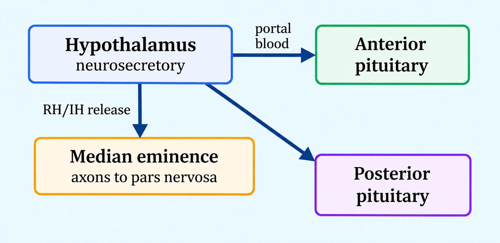
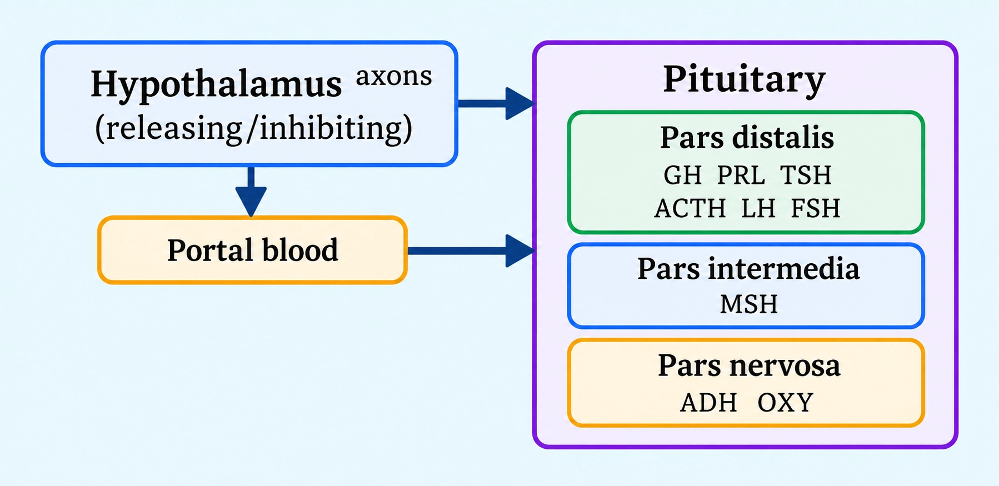
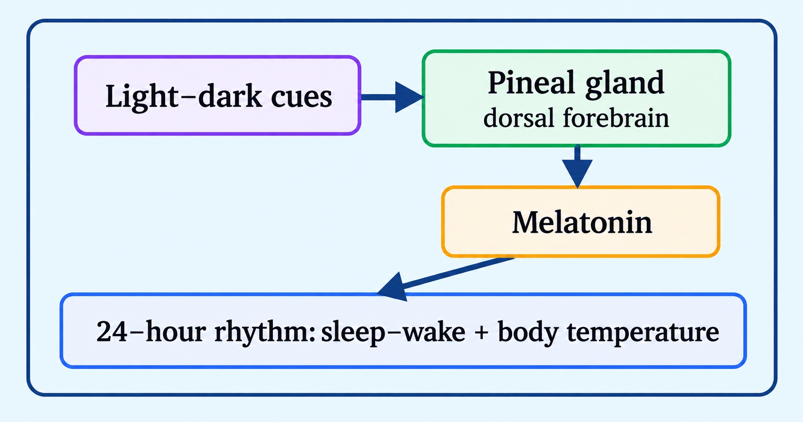
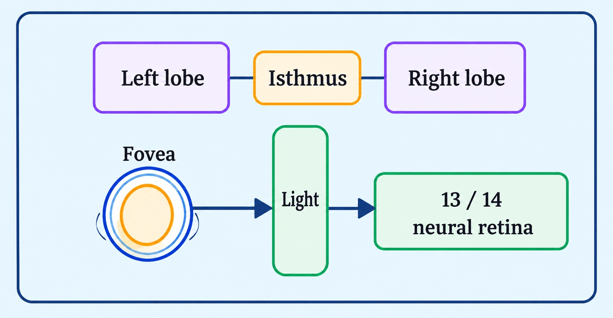

Biology
Chemical Coordination and Integration
Why hormones are needed along with fast nerve impulses for complete body coordination
NEURAL VS CHEMICAL CONTROL
📖Definition & Introduction
- Neural coordination gives point-to-point, very rapid control, but effects are often short-lived.
- Many cells are not directly innervated by nerve fibres, so neural control cannot reach every target.
- Many body functions (growth, metabolism, reproduction, homeostasis) need continuous regulation over long durations.
- Chemical coordination is via hormones released by endocrine tissues into body fluids (mainly blood).
- Hormones act as intercellular messengers in trace amounts on specific target tissues with receptors.
- Thus, neural system + endocrine system jointly coordinate, integrate, and regulate physiology.
🖼️Diagram
🎯Key Concepts
- ⚡Neural: fastest signalling; ideal for immediate actions (reflexes, movement).
- 🎯Neural: precise, point-to-point wiring; signal reaches only connected cells.
- ⏱️Neural: responses are usually short-lived once impulses stop.
- 🧪Endocrine: hormones travel via blood; can influence many tissues at once.
- 🔁Endocrine: supports continuous, long-term regulation (homeostasis, growth, cycles).
- 🔐Hormone effect depends on receptors; only target cells respond.
🔎WHY NEURAL CONTROL ALONE IS NOT ENOUGH
- Neural signalling is best for immediate responses; many physiological needs are ongoing.
- Nerve fibres do not innervate all cells; many tissues need a different communication route.
- Some processes need body-wide coordination (e.g., metabolism), not just local point-to-point control.
- Neural effects are typically short-lived; regulation like growth needs sustained signals.
⚙️HOW CHEMICAL (ENDOCRINE) CONTROL COMPLEMENTS IT
- Endocrine glands/tissues release hormones into body fluids (mainly blood).
- Hormones act in trace amounts as non-nutrient intercellular messengers.
- Only cells with the specific receptor respond, ensuring target specificity despite blood transport.
- Neural + endocrine together provide integration: fast action plus steady regulation.
⚖️NEURAL COORDINATION vs CHEMICAL (HORMONAL) COORDINATION
| Basis | Neural control | Chemical (endocrine) control |
|---|---|---|
| Signal type | Nerve impulse (electrical) + neurotransmitters | Hormones (chemical messengers) |
| Route | Along nerve fibres to specific effectors | Released into body fluids; commonly blood |
| Targeting | Highly point-to-point (wired) | Widespread reach; response only in receptor-bearing targets |
| Speed of action | Very rapid | Usually slower than neural responses |
| Duration of effect | Generally short-lived | Generally longer-lasting; supports continuous regulation |
| Best suited for | Reflexes, quick movements, instant adjustments | Growth, metabolism, reproduction, long-term homeostasis |
✏️Solved Q&A
1
Give two reasons why chemical (endocrine) coordination is required even though neural coordination is rapid.
Answer:
Neural control is point-to-point; many cells/tissues are not innervated by nerve fibres.
Many functions need continuous, long-duration regulation; neural effects are often short-lived.
Neural control is point-to-point; many cells/tissues are not innervated by nerve fibres.
Many functions need continuous, long-duration regulation; neural effects are often short-lived.
✓ Endocrine control is needed for (i) reaching non-innervated targets and (ii) sustained regulation of long-term body functions.
2
A hormone is released into blood and reaches many organs, yet only one organ shows a response. Explain.
Answer:
Hormones act only by binding to specific receptors present on/in target tissues.
Organs lacking the receptor cannot form the hormone–receptor complex, so they do not respond.
Hormones act only by binding to specific receptors present on/in target tissues.
Organs lacking the receptor cannot form the hormone–receptor complex, so they do not respond.
✓ Only the organ with the specific hormone receptor responds; blood transport alone does not guarantee action.
⭐Important Points
- Neural coordination: rapid, point-to-point control with typically short-lived effects.
- Key need for endocrine control: many functions require continuous regulation over long periods.
- Key limitation of neural control: all cells are not innervated by nerve fibres.
- Hormones are non-nutrient chemicals produced in trace amounts acting as intercellular messengers.
- Hormone specificity is due to receptor distribution in target tissues.
💡Memory Technique
“NERVE vs HORMONE: WiRe vs WiDe”
📌Quick Recap
Neural coordination: point-to-point, very rapid, usually short-lived.Not all body cells are innervated by nerve fibres.Many functions need continuous regulation → endocrine (chemical) coordination required.Hormones: non-nutrient chemical messengers produced in trace amounts.Endocrine glands are ductless; secretions enter body fluids (classically blood).Only target tissues with specific receptors respond to a hormone.Nervous system + endocrine system together coordinate and regulate body functions.
Ductless glands release trace-amount chemical messengers into body fluids for coordination
ENDOCRINE GLANDS AND HORMONES
📖Definition & Introduction
- Endocrine (ductless) glands lack ducts and release secretions directly into body fluids (classically: blood).
- Hormones are chemical secretions that act on specific target tissues to regulate body functions.
- Classical definition: hormone is produced by an endocrine gland, released into blood, and acts on a distant target organ.
- Current definition: hormones are non-nutrient chemicals acting as intercellular messengers, produced in trace amounts.
- The current definition is broader: includes messengers from diffuse endocrine cells and some non-classical endocrine sources.
- Key idea: endocrine signalling is slower than nerves but helps continuous regulation across many tissues.
🖼️Diagram
🎯Key Concepts
- 🩸Endocrine secretions enter body fluids; blood is the classic transport medium.
- 🧪Hormones are non-nutrient chemicals: not used as food/energy building blocks.
- 📩They function as intercellular messengers: cell-to-cell coordination signals.
- 🔬Effective at trace amounts due to high receptor specificity and amplification.
- 🎯Action depends on target-cell receptors, not on where blood carries the hormone.
- 🧩Broader view: hormones can come from diffused tissues (e.g., gut, kidney, heart).
🔎CLASSICAL → CURRENT IDEA (WHY THE DEFINITION EXPANDED)
- Classical focused on: organised endocrine gland → blood → distant target organ.
- Current focuses on role: intercellular messenger, made in trace amounts, non-nutrient.
- So, hormones can originate from diffuse endocrine cells in many organs (not only glands).
- Blood is common, but definition does not restrict hormones to only "gland-to-blood" pathways.
⚙️WHAT EXAMS MEAN BY "NON-NUTRIENT" AND "TRACE AMOUNTS"
- Non-nutrient: not serving as food; primary role is signalling/regulation.
- Trace amounts: secreted in very small quantities but produce significant effects.
- Small quantity works because of high receptor affinity and signal amplification in target cells.
- A hormone may circulate widely, yet acts only where its specific receptor is present.
⚖️Classical vs Current Definition of Hormone
| Basis | Classical definition | Current definition |
|---|---|---|
| Source | Only endocrine (ductless) glands | Any hormone-producing endocrine tissue/cell, including diffused sources |
| Nature | Chemical secretion (often implied gland product) | Non-nutrient chemical messenger |
| Amount | Not emphasized | Produced in trace amounts |
| Route (typical) | Released into blood | Released into body fluids; blood common, definition is broader |
| Target | Distant target organ emphasized | Intercellular signalling; target determined by receptors |
| Scope | Narrow (gland-to-organ) | Broad (includes newer signalling molecules beyond organised glands) |
✏️Solved Q&A
1
A student says: "Hormones are secreted only by endocrine glands and must travel in blood to a distant organ." Identify what is correct and what needs correction as per current definition.
Answer:
The statement matches the classical definition: endocrine gland → blood → distant target organ.
Correction 1: hormones are non-nutrient intercellular messengers produced in trace amounts.
Correction 2: hormone sources are broader than organised glands; diffuse endocrine cells and some organs also secrete hormones.
Blood is a common transport fluid, but target specificity depends on receptors, not merely circulation.
The statement matches the classical definition: endocrine gland → blood → distant target organ.
Correction 1: hormones are non-nutrient intercellular messengers produced in trace amounts.
Correction 2: hormone sources are broader than organised glands; diffuse endocrine cells and some organs also secrete hormones.
Blood is a common transport fluid, but target specificity depends on receptors, not merely circulation.
✓ Correct for classical definition; incomplete for current definition—add non-nutrient, trace amounts, broader sources, and receptor-based targeting.
2
Why does a hormone circulating throughout the body affect only certain cells, even though it reaches many tissues via blood?
Answer:
Hormones act by binding to specific receptors present only on/in particular target cells.
Cells lacking the receptor cannot form a hormone–receptor complex, so they do not show the response.
Thus, endocrine signalling is body-wide in distribution but selective in action.
Hormones act by binding to specific receptors present only on/in particular target cells.
Cells lacking the receptor cannot form a hormone–receptor complex, so they do not show the response.
Thus, endocrine signalling is body-wide in distribution but selective in action.
✓ Because only receptor-bearing target cells respond; distribution is widespread but action is receptor-specific.
⭐Important Points
- Endocrine glands are ductless; secretions enter body fluids (classically blood).
- Current exam definition: hormones are non-nutrient chemicals, intercellular messengers, in trace amounts.
- Do not restrict hormones to only organised endocrine glands; include diffused endocrine tissues conceptually.
- Classical definition highlights distant target organ; current definition highlights messenger role.
- Hormonal coordination supports continuous regulation where neural innervation is absent/insufficient.
💡Memory Technique
“Mnemonic: D−B−T (plus NIM‑Trace)”
📌Quick Recap
Endocrine gland = ductless gland; secretion released directly into body fluids (classically blood).Hormone (classical): endocrine gland product → blood → distant target organ.Hormone (current): non-nutrient chemical, intercellular messenger, produced in trace amounts.Broader scope: includes hormones from diffused endocrine cells and some non-classical endocrine sources.Specificity: a hormone acts only on cells with its specific receptor.
Major glands, key hormones, and what they control
HUMAN ENDOCRINE OVERVIEW
📖Definition & Introduction
- Endocrine system = ductless glands + diffused hormone-secreting cells that release hormones into body fluids (mainly blood) to regulate target tissues.
- Hormones are non-nutrient chemical messengers produced in trace amounts for coordination and integration.
- Endocrine effects are usually slower than neural control but longer-lasting and widespread.
- Hormones act only on target cells having specific hormone receptors.
- Neural and endocrine systems work together to regulate physiology and maintain homeostasis.
🎯Key Concepts
- 🧠Hypothalamus controls pituitary via releasing and inhibiting hormones.
- 🎛️Pituitary: anterior secretes trophic + non-trophic hormones; posterior stores/releases ADH and oxytocin.
- 🌙Pineal melatonin helps regulate diurnal (24 h) rhythms (sleep–wake, body temperature).
- 🔥Thyroid T3/T4 regulate BMR and metabolism; iodine is essential for synthesis.
- 🦴PTH raises blood Ca2+; thyroid calcitonin lowers blood Ca2+.
- 🛡️Thymus thymosins support T-lymphocyte differentiation and immunity.
🔎MAJOR GLANDS: ONE-LINE FUNCTIONS
- Hypothalamus: releasing/inhibiting hormones regulate anterior pituitary; posterior pituitary under neural control.
- Pituitary (anterior): GH, PRL, TSH, ACTH, LH, FSH; (intermediate): MSH; (posterior): releases ADH and oxytocin.
- Thyroid: T3/T4 regulate BMR and metabolism; calcitonin helps regulate blood Ca2+.
- Parathyroid: PTH is hypercalcemic (raises blood Ca2+).
- Adrenal: medulla (adrenaline, noradrenaline); cortex (cortisol, aldosterone; small amount of androgens).
⚙️MECHANISM OF HORMONE ACTION (CORE STEPS)
- Hormone binds specific receptor present only in target tissue → hormone–receptor complex forms.
- Membrane receptor pathway: hormone stays outside → second messengers (cAMP, IP3, Ca2+) → metabolic effects.
- Intracellular receptor pathway (steroids, iodothyronines): hormone enters cell → binds nuclear receptor → altered gene expression.
- Final effect: biochemical changes produce physiological and developmental responses.
⚖️INSULIN vs GLUCAGON (BLOOD GLUCOSE CONTROL)
| Basis | Insulin | Glucagon |
|---|---|---|
| Source (islets) | β-cells | α-cells |
| Net effect on blood glucose | Decreases (hypoglycemic) | Increases (hyperglycemic) |
| Major target cells | Hepatocytes, adipocytes | Hepatocytes |
| Key processes | ↑ glucose uptake/utilisation; ↑ glycogenesis | ↑ glycogenolysis; ↑ gluconeogenesis; reduces glucose uptake/utilisation (overall) |
| Clinical link | Deficiency/resistance → diabetes mellitus (prolonged hyperglycemia) | Excess action contributes to hyperglycemia |
✏️Solved Q&A
1
A patient has excessive dilute urine and dehydration due to inability of kidneys to conserve water. Which hormone is likely deficient, and from where is it released?
Answer:
Water reabsorption in distal tubules is promoted by vasopressin (ADH).
ADH is synthesised in hypothalamus and stored/released from posterior pituitary (neurohypophysis).
Deficiency causes diabetes insipidus with high urine output and dehydration.
Water reabsorption in distal tubules is promoted by vasopressin (ADH).
ADH is synthesised in hypothalamus and stored/released from posterior pituitary (neurohypophysis).
Deficiency causes diabetes insipidus with high urine output and dehydration.
✓ Deficient hormone: ADH (vasopressin); released from posterior pituitary (neurohypophysis).
2
Match the hormone to its primary exam-relevant action: (i) TSH, (ii) ACTH, (iii) LH (female).
Answer:
(i) TSH stimulates synthesis and secretion of thyroid hormones from thyroid gland.
(ii) ACTH stimulates synthesis and secretion of glucocorticoids from adrenal cortex.
(iii) LH in females induces ovulation of mature (Graafian) follicle and maintains corpus luteum.
(i) TSH stimulates synthesis and secretion of thyroid hormones from thyroid gland.
(ii) ACTH stimulates synthesis and secretion of glucocorticoids from adrenal cortex.
(iii) LH in females induces ovulation of mature (Graafian) follicle and maintains corpus luteum.
✓ (i) Thyroid hormones; (ii) Glucocorticoids; (iii) Ovulation + corpus luteum maintenance.
⭐Important Points
- Endocrine glands are ductless; hormones enter blood/body fluids directly.
- Hypothalamic hormones reach anterior pituitary via portal circulation; posterior pituitary is under direct neural control.
- Posterior pituitary stores/releases oxytocin and ADH but does not synthesise them.
- Thyroid hormone synthesis requires iodine; deficiency can cause goitre with hypothyroidism.
- PTH increases blood Ca2+; calcitonin decreases blood Ca2+ (opposite actions in homeostasis).
💡Memory Technique
“Quick mnemonics: "FLAT PiG" + "IOP"”
📌Quick Recap
Endocrine gland: ductless; secretion enters blood/body fluids.Hormones: non-nutrient chemical messengers produced in trace amounts; act via specific receptors.Hypothalamus → anterior pituitary via portal system; posterior pituitary via direct neural control.Posterior pituitary: releases ADH (kidney water reabsorption) and oxytocin (uterine contraction, milk ejection); synthesised in hypothalamus.Thyroid: T3/T4 regulate BMR; iodine is essential; calcitonin lowers blood Ca2+.Parathyroid: PTH raises blood Ca2+ (bone resorption, renal reabsorption, intestinal absorption).Adrenal medulla: adrenaline/noradrenaline (fight-or-flight); cortex: cortisol (gluco-), aldosterone (mineral-), small amount of androgens.Islets: insulin (β) ↓ blood glucose via uptake + glycogenesis; glucagon (α) ↑ blood glucose via glycogenolysis + gluconeogenesis.
Releasing/inhibiting neurohormones regulate anterior pituitary via portal blood; posterior pituitary via neurons
HYPOTHALAMUS CONTROL
📖Definition & Introduction
- Hypothalamus (basal diencephalon) controls pituitary output using neurosecretory hormones and neural signals.
- Neurosecretory nuclei contain neurons that synthesise hormones and release them from nerve endings.
- Hypothalamic hormones are of two functional types: releasing (stimulate) and inhibiting (suppress) pituitary secretion.
- To regulate anterior pituitary, hypothalamic hormones enter the hypothalamo-hypophyseal portal circulatory system.
- The posterior pituitary is under direct neural regulation and mainly stores/releases hypothalamic hormones.
🖼️Diagram

🎯Key Concepts
- 📍Location: hypothalamus lies in the basal part of diencephalon (forebrain).
- 🧪Most hypothalamic releasing hormones are peptides; some inhibitory control is via amines (e.g., dopamine as PIH).
- 🧭Releasing hormones ↑ pituitary secretion; inhibiting hormones ↓ pituitary secretion.
- 🩸Portal system delivers hypothalamic hormones quickly to anterior pituitary in high local concentration.
- 🔌Neural control dominates posterior pituitary: axons from hypothalamus terminate in pars nervosa.
- 🧬Examples: GnRH stimulates gonadotrophins; somatostatin inhibits GH release.
🔎ANTERIOR PITUITARY REGULATION (PORTAL ROUTE)
- Hypothalamic neurons secrete releasing/inhibiting hormones into capillaries near median eminence.
- These hormones travel through the hypothalamo-hypophyseal portal circulation to anterior pituitary.
- At anterior pituitary cells, they control synthesis and secretion of pituitary trophic hormones.
- Key examples: GnRH ⇒ stimulates pituitary gonadotrophs to release LH and FSH.
- Somatostatin (GHIH) ⇒ inhibits growth hormone (GH) release from anterior pituitary.
⚙️POSTERIOR PITUITARY REGULATION (NEURAL ROUTE)
- Posterior pituitary (neurohypophysis/pars nervosa) is directly regulated by hypothalamic neurons.
- Hormones are synthesised in hypothalamus and transported down axons to posterior pituitary endings.
- Posterior pituitary stores and releases (does not synthesise) oxytocin and vasopressin (ADH).
- Neural impulses trigger release into blood: ADH acts mainly on kidney; oxytocin on smooth muscle.
⚖️ANTERIOR vs POSTERIOR PITUITARY CONTROL BY HYPOTHALAMUS
| Basis | Anterior pituitary (adenohypophysis) | Posterior pituitary (neurohypophysis) |
|---|---|---|
| Primary control type | Chemical control by RH/IH | Direct neural control |
| Connection to hypothalamus | Portal blood vessels | Axons from hypothalamic neurons |
| What arrives from hypothalamus | Releasing/inhibiting hormones | Oxytocin + ADH made in hypothalamus |
| Role of pituitary part | Synthesises + secretes its hormones under hypothalamic control | Stores + releases hypothalamic hormones |
| Named examples | GnRH ↑ LH/FSH; somatostatin ↓ GH | Oxytocin: uterine contraction/milk ejection; ADH: water reabsorption |
✏️Solved Q&A
1
A student says: “Hypothalamic hormones reach both pituitary lobes through blood.” Correct the statement with reasoning.
Answer:
Anterior pituitary is regulated by hypothalamic hormones delivered via portal circulatory system.
Posterior pituitary is under direct neural regulation; hypothalamic axons end in pars nervosa.
Thus, only anterior pituitary depends mainly on portal blood delivery for hypothalamic control.
Anterior pituitary is regulated by hypothalamic hormones delivered via portal circulatory system.
Posterior pituitary is under direct neural regulation; hypothalamic axons end in pars nervosa.
Thus, only anterior pituitary depends mainly on portal blood delivery for hypothalamic control.
✓ Hypothalamic hormones reach anterior pituitary via portal blood, but posterior pituitary via hypothalamic neurons (axons).
2
Predict the pituitary effect of (i) GnRH deficiency, (ii) excess somatostatin. Mention the specific pituitary hormones affected.
Answer:
GnRH is a releasing hormone that stimulates pituitary synthesis and release of gonadotrophins.
So GnRH deficiency lowers LH and FSH secretion from anterior pituitary.
Somatostatin is an inhibiting hormone that inhibits release of GH from pituitary.
So excess somatostatin decreases growth hormone release.
GnRH is a releasing hormone that stimulates pituitary synthesis and release of gonadotrophins.
So GnRH deficiency lowers LH and FSH secretion from anterior pituitary.
Somatostatin is an inhibiting hormone that inhibits release of GH from pituitary.
So excess somatostatin decreases growth hormone release.
✓ (i) GnRH deficiency → ↓ LH, FSH; (ii) excess somatostatin → ↓ GH (all via anterior pituitary).
⭐Important Points
- Hypothalamus is the key endocrine regulator that controls pituitary output.
- Neurosecretory nuclei = groups of neurons that produce hormones (not just neurotransmitters).
- Anterior pituitary control is mainly via hypothalamo-hypophyseal portal system.
- Posterior pituitary is a storage and release site for hypothalamic oxytocin and ADH.
- Know examples: GnRH stimulates gonadotrophins; somatostatin inhibits GH.
💡Memory Technique
“PORTAL for FRONT, NERVE for BACK”
📌Quick Recap
Hypothalamus: basal diencephalon; contains neurosecretory nuclei.Hypothalamic control signals: releasing and inhibiting hormones for anterior pituitary; direct neural control for posterior pituitary.Anterior pituitary regulation: hormones reach via hypothalamo-hypophyseal portal circulation.Posterior pituitary regulation: direct neural control; axonal transport from hypothalamus.Posterior pituitary role: stores/releases oxytocin and vasopressin (ADH) synthesised in hypothalamus.Examples to quote: GnRH → ↑ LH, FSH; somatostatin → ↓ GH.
Adenohypophysis vs Neurohypophysis: who makes what, where it acts, and key disorders
PITUITARY HORMONES
📖Definition & Introduction
- Pituitary gland is the master endocrine gland in sella turcica, attached to hypothalamus by stalk (infundibulum).
- Has adenohypophysis (glandular) and neurohypophysis (neural).
- Pars distalis (main anterior pituitary) secretes 6 hormones: GH, PRL, TSH, ACTH, LH, FSH.
- Pars intermedia secretes MSH; in humans it is almost merged with pars distalis.
- Pars nervosa (posterior pituitary) stores & releases hypothalamic oxytocin and ADH (vasopressin); it does not synthesize them.
🖼️Diagram

🎯Key Concepts
- 📍Pituitary sits in sella turcica; stalk connects it to hypothalamus.
- 🧪Adenohypophysis = hormone-producing tissue; neurohypophysis = hormone-releasing nerve terminals.
- 🧭Anterior pituitary controlled by hypothalamus via portal circulation; posterior via direct neural input.
- 🔁TSH/ACTH/LH/FSH are trophic hormones: act on other endocrine glands/gonads.
- 🚰ADH conserves water at kidney; deficiency → diabetes insipidus (polyuria, dehydration).
- 📏GH excess: gigantism (child) / acromegaly (adult); low: pituitary dwarfism.
🔎PARS DISTALIS (ANTERIOR PITUITARY): HORMONES → KEY ACTIONS
- GH (somatotropin): promotes body growth; excess → gigantism/acromegaly; low → pituitary dwarfism.
- PRL: mammary gland growth and milk formation.
- TSH: stimulates thyroid to synthesize & secrete T3/T4.
- ACTH: stimulates adrenal cortex to secrete glucocorticoids.
- LH: male androgen secretion (testis); female ovulation + maintains corpus luteum.
⚙️PARS INTERMEDIA & PARS NERVOSA: WHAT’S SPECIAL
- Pars intermedia: secretes only MSH → acts on melanocytes → regulates skin pigmentation.
- Posterior pituitary (pars nervosa): stores/releases hormones made in hypothalamus.
- Oxytocin: uterine contractions during parturition; milk ejection (let-down) from mammary glands.
- ADH (vasopressin): increases water (and electrolyte) reabsorption at distal tubules → decreases urine output.
⚖️ADENOHYPOPHYSIS vs NEUROHYPOPHYSIS (HIGH-YIELD DIFFERENCE)
| Basis | Adenohypophysis (anterior) | Neurohypophysis (posterior) |
|---|---|---|
| Tissue type | Glandular | Neural (axons + nerve endings) |
| Major parts | Pars distalis + pars intermedia | Pars nervosa |
| Role | Synthesizes & secretes pituitary hormones | Stores & releases hypothalamic hormones |
| Main hormones | GH, PRL, TSH, ACTH, LH, FSH; + MSH (pars intermedia) | Oxytocin, ADH (vasopressin) |
| Hypothalamic control | Via portal circulation (releasing/inhibiting hormones) | Via direct neural regulation |
✏️Solved Q&A
1
A 42-year-old shows enlarged hands, feet, and coarsened facial features; growth in height is not increasing. Which pituitary hormone is most likely over-secreted, and what is the condition called?
Answer:
Height increase stops after epiphyseal closure; adult excess of GH causes tissue thickening.
Characteristic adult GH excess presentation is acromegaly (often gradual onset).
Height increase stops after epiphyseal closure; adult excess of GH causes tissue thickening.
Characteristic adult GH excess presentation is acromegaly (often gradual onset).
✓ Growth hormone (GH) excess → acromegaly.
2
A patient passes large volumes of dilute urine and feels intense thirst. MRI suggests posterior pituitary involvement. Name the hormone deficiency and the disorder.
Answer:
ADH normally increases water reabsorption in distal tubules, reducing urine output.
Impaired synthesis/release of ADH leads to inability to conserve water → dehydration and polyuria.
ADH normally increases water reabsorption in distal tubules, reducing urine output.
Impaired synthesis/release of ADH leads to inability to conserve water → dehydration and polyuria.
✓ ADH (vasopressin) deficiency → diabetes insipidus.
⭐Important Points
- Pars distalis secretes exactly six major hormones: GH, PRL, TSH, ACTH, LH, FSH.
- In humans, pars intermedia is almost merged with pars distalis; still credited with MSH.
- Posterior pituitary does not synthesize oxytocin/ADH; it stores and releases them.
- Female trap: LH = ovulation + corpus luteum; FSH = follicle growth.
- GH disorders: child excess = gigantism; adult excess = acromegaly; low = pituitary dwarfism.
💡Memory Technique
“Mnemonic: FLAT PeG + MOA”
📌Quick Recap
Pituitary in sella turcica; connected to hypothalamus by stalk.Adenohypophysis = pars distalis + pars intermedia; neurohypophysis = pars nervosa.Pars distalis: GH, PRL, TSH, ACTH, LH, FSH.Pars intermedia: MSH → pigmentation.Pars nervosa: releases oxytocin (uterus/milk ejection) and ADH (water conservation).Clinical: GH excess (adult) → acromegaly; ADH deficiency → diabetes insipidus.
Key endocrine regulator of 24-hour (diurnal) rhythms: sleep–wake cycle and body temperature
PINEAL GLAND & MELATONIN
📖Definition & Introduction
- Pineal gland is an endocrine gland on the dorsal side of the forebrain that secretes melatonin.
- Melatonin is a hormone that helps regulate the body’s 24-hour (diurnal) rhythms.
- Key outputs include maintaining normal sleep–wake cycle and daily body temperature rhythm.
- Melatonin also influences metabolism, pigmentation, menstrual cycle, and defense capability.
- Acts as a chemical signal linking environmental light–dark changes to physiological timing.
🖼️Diagram

🎯Key Concepts
- 🧠Location test: pineal gland lies on the dorsal forebrain (a midline brain endocrine organ).
- 🌙Melatonin is a key hormone for 24-hour (diurnal) rhythm regulation.
- 😴Supports sleep onset and helps maintain the sleep–wake cycle (night-time signal).
- 🌡️Helps maintain normal daily body temperature rhythm (tends to be lower at night).
- ⚡Influences metabolism and energy timing across the day–night cycle.
- 🎨May influence pigmentation; do not confuse this with MSH (pituitary pars intermedia), which directly regulates skin pigmentation in NCERT.
🔎WHAT MELATONIN REGULATES (EXAM LIST)
- Sleep–wake cycle: helps maintain normal timing of sleep and wakefulness.
- Body temperature rhythm: supports daily oscillation; tends to be lower at night.
- Metabolism: influences timing of metabolic activity across day and night.
- Pigmentation: influences pigmentation-related physiology (not the same as MSH, which directly regulates skin pigmentation in NCERT).
- Menstrual cycle: influences reproductive timing and cyclicity.
⚙️HOW QUESTIONS ARE FRAMED IN EXAMS
- Asked as: gland → hormone → function: Pineal → melatonin → diurnal rhythm control.
- Keyword triggers: 24-hour rhythm, diurnal, sleep–wake, temperature → answer melatonin.
- Location prompt: dorsal forebrain strongly points to the pineal gland.
- Multi-effect prompt: besides sleep, mention metabolism, pigmentation, menstrual cycle, defense capability.
⚖️DIURNAL RHYTHM VS SLEEP–WAKE CYCLE (LINKED TERMS)
| Basis | Diurnal (24-hour) rhythm | Sleep–wake cycle |
|---|---|---|
| Meaning | Daily timing pattern of body functions | Daily pattern of sleep and waking |
| Scope | Includes temperature, metabolism, hormones, etc. | A major component of diurnal rhythm |
| Key pineal link | Melatonin helps regulate it | Melatonin helps maintain normal rhythm |
| Exam usage | Use when question says 24-hour/diurnal | Use when question says sleep–wake |
✏️Solved Q&A
1
A student writes: "Melatonin is secreted by the pituitary and controls only sleep." Correct the statement with proper gland, location, and key functions.
Answer:
Correct gland: melatonin is secreted by the pineal gland (not pituitary).
Add location: pineal lies on the dorsal side of the forebrain.
Correct function scope: regulates 24-hour (diurnal) rhythm, helping maintain sleep–wake and body temperature rhythms.
Add NCERT list of additional influences: metabolism, pigmentation, menstrual cycle, defense capability.
Correct gland: melatonin is secreted by the pineal gland (not pituitary).
Add location: pineal lies on the dorsal side of the forebrain.
Correct function scope: regulates 24-hour (diurnal) rhythm, helping maintain sleep–wake and body temperature rhythms.
Add NCERT list of additional influences: metabolism, pigmentation, menstrual cycle, defense capability.
✓ Melatonin is secreted by the pineal gland (dorsal forebrain) and regulates 24-hour (diurnal) rhythms including sleep–wake cycle and body temperature; it also influences metabolism, pigmentation, menstrual cycle and defense capability.
2
In a 1-mark question, you are asked: "Which endocrine gland helps regulate 24-hour body rhythms, and name its hormone?" Write an ideal, complete response.
Answer:
Match keyword 24-hour/diurnal rhythm with pineal function.
State gland and hormone in one line for full credit.
Match keyword 24-hour/diurnal rhythm with pineal function.
State gland and hormone in one line for full credit.
✓ Pineal gland; hormone: melatonin.
⭐Important Points
- Pineal gland is an organised endocrine gland located on the dorsal forebrain.
- Melatonin regulates the body’s 24-hour (diurnal) rhythm.
- Helps maintain normal sleep–wake cycle and body temperature rhythms (NCERT line).
- Also influences metabolism, pigmentation, menstrual cycle, and defense capability.
- Exam answer core chain: pineal → melatonin → diurnal rhythm.
💡Memory Technique
“Mnemonic: "PINeal = Night PIN"”
📌Quick Recap
Location: Pineal gland is on the dorsal side of the forebrain.Hormone: Pineal gland secretes melatonin.Core role: Melatonin regulates the body’s 24-hour (diurnal) rhythm.Maintains normal rhythms of sleep–wake cycle and body temperature.Also influences metabolism, pigmentation, menstrual cycle, and defense capability.
Structure, iodine-dependent T3/T4 synthesis, key roles, calcitonin & common disorders
THYROID HORMONES
📖Definition & Introduction
- Thyroid hormones are iodothyronines (T4 thyroxine and T3) secreted by thyroid follicular cells.
- The thyroid gland has two lobes on either side of trachea, joined by an isthmus.
- Microscopically it is made of follicles: a colloid-filled cavity lined by follicular cells.
- Iodine is essential for normal rate of T3/T4 synthesis; deficiency causes hypothyroidism and goitre.
- Thyroid also secretes calcitonin (thyrocalcitonin), a protein hormone that decreases blood Ca2+.
🖼️Diagram

🎯Key Concepts
- 🧠T3/T4 act via intracellular (nuclear) receptors → change gene expression.
- 🧪Follicular cells synthesize T4 (major secretion) and T3 (more active form).
- 🧂Iodine deficiency → low hormone output → thyroid enlargement (goitre).
- 🔥Major action: regulate basal metabolic rate (BMR) and overall fuel metabolism.
- 🩸Support RBC formation (erythropoiesis) and help maintain water–electrolyte balance.
- 🦴Calcitonin lowers blood Ca2+; PTH (parathyroid) raises it (opposite).
🔎T3/T4 SYNTHESIS (HIGH-YIELD FLOW)
- Follicular cells make thyroglobulin and store it in follicle colloid.
- Dietary iodide is taken up by follicular cells; iodine is essential for hormone synthesis.
- On thyroglobulin, iodination and coupling reactions form T4 and T3; hormones are released into blood when needed.
- Low iodine → reduced T3/T4 output → compensatory thyroid enlargement → goitre.
⚙️PHYSIOLOGICAL ROLES (WHAT TO WRITE IN EXAMS)
- Major: regulate BMR and heat production; deficiency lowers BMR, excess raises BMR.
- Control metabolism of carbohydrates, proteins, and fats.
- Support erythropoiesis (RBC formation).
- Influence water and electrolyte balance.
- Essential for normal growth and development; severe deficiency in early life leads to cretinism.
⚖️Hypothyroidism vs Hyperthyroidism (including Graves')
| Basis | Hypothyroidism | Hyperthyroidism (Graves') |
|---|---|---|
| Hormone level | Low T3/T4 | High T3/T4 |
| Common cause (from syllabus text) | Iodine deficiency (common) → low synthesis | Thyroid overactivity (e.g., nodules/cancer); Graves' is a classic autoimmune form |
| Thyroid size | May enlarge → goitre | Often enlarged; in Graves' called exophthalmic goitre |
| Metabolic effect | ↓ BMR, sluggish metabolism | ↑ BMR, weight loss |
| Key feature | In pregnancy/early life: cretinism risk | Exophthalmos (protruding eyes) is characteristic of Graves' disease |
✏️Solved Q&A
1
A child from an iodine-deficient area shows stunted growth and mental impairment. Name the condition and the endocrine cause.
Answer:
Iodine deficiency → ↓ thyroid hormone synthesis → hypothyroidism.
During pregnancy/early life, hypothyroidism causes defective development and maturation → cretinism.
Iodine deficiency → ↓ thyroid hormone synthesis → hypothyroidism.
During pregnancy/early life, hypothyroidism causes defective development and maturation → cretinism.
✓ Condition: cretinism; Cause: iodine deficiency–induced hypothyroidism (low T3/T4).
2
A patient has thyroid enlargement, weight loss, protruding eyeballs and high BMR. Identify the disorder and state the hormone status.
Answer:
Goitre + exophthalmos + ↑ BMR + weight loss are characteristic of exophthalmic goitre.
Exophthalmic goitre is a form of hyperthyroidism (Graves' disease) → ↑ synthesis/secretion of thyroid hormones.
Goitre + exophthalmos + ↑ BMR + weight loss are characteristic of exophthalmic goitre.
Exophthalmic goitre is a form of hyperthyroidism (Graves' disease) → ↑ synthesis/secretion of thyroid hormones.
✓ Disorder: Graves' disease (exophthalmic goitre); Hormone status: high T3/T4.
⭐Important Points
- Thyroid has two lobes connected by isthmus; sits on either side of trachea.
- Functional unit is the follicle: follicular cells around colloid (thyroglobulin store).
- Hormones: T4 (thyroxine) and T3; iodine is essential for synthesis.
- Iodine deficiency → hypothyroidism + thyroid enlargement called goitre.
- Pregnancy/early-life hypothyroidism → cretinism (stunted growth, mental impairment).
💡Memory Technique
“Mnemonic: THYROID core functions”
📌Quick Recap
Hormones from follicular cells: T4 (thyroxine, tetraiodothyronine) and T3 (triiodothyronine).Thyroid anatomy: two lobes + isthmus; follicles are microscopic units.Iodine is essential; deficiency → hypothyroidism + goitre.Thyroid hormone roles: BMR, metabolism (carbs/proteins/fats), RBC formation, water–electrolyte balance.Severe hypothyroidism in fetus/child → cretinism.Graves' (exophthalmic goitre): hyperthyroidism with goitre + exophthalmos + ↑BMR + weight loss.Calcitonin (thyroid) decreases blood Ca2+; PTH (parathyroid) increases it.
Four glands behind thyroid; low Ca2+ triggers PTH to raise blood Ca2+ (opposite TCT)
PARATHYROID AND PTH
📖Definition & Introduction
- Parathyroid hormone (PTH) is a peptide hormone from parathyroid glands that increases blood Ca2+.
- Humans have four parathyroid glands located on the back (posterior) side of the thyroid.
- PTH secretion is regulated by circulating Ca2+: low Ca2+ → PTH release; high Ca2+ → reduced PTH.
- PTH is a hypercalcemic hormone: net effect is Ca2+ entry into blood and reduced Ca2+ loss.
- PTH works with thyrocalcitonin (TCT) to maintain Ca2+ homeostasis but in opposite directions.
🖼️Diagram
🎯Key Concepts
- Location: two pairs of parathyroids on posterior thyroid; one pair per thyroid lobe.
- Control: circulating Ca2+ directly regulates PTH secretion (negative feedback).
- Bone: PTH stimulates bone resorption → Ca2+ released into blood.
- Kidney: PTH increases Ca2+ reabsorption in renal tubules → less Ca2+ in urine.
- Intestine: PTH increases Ca2+ absorption from digested food → blood Ca2+ rises.
- Opposition: PTH raises blood Ca2+; TCT lowers blood Ca2+.
🔎Ca2+-REGULATED PTH SECRETION (CORE LOOP)
- Stimulus: fall in circulating Ca2+ triggers increased PTH secretion.
- Response: PTH raises blood Ca2+ via bone, kidney and intestine actions.
- Feedback: rising blood Ca2+ suppresses further PTH release.
- This negative feedback maintains calcium homeostasis in extracellular fluid.
⚙️HYPERCALCEMIC ACTIONS OF PTH (TARGET-WISE)
- Bone: stimulates resorption (demineralisation) → Ca2+ enters blood.
- Kidney: increases Ca2+ reabsorption by renal tubules → urinary Ca2+ decreases.
- Intestine: increases Ca2+ absorption from food → supports sustained rise in blood Ca2+.
- Net effect: restores blood Ca2+ when it falls below normal set-point.
⚖️PTH vs THYROCALCITONIN (TCT) IN Ca2+ HOMEOSTASIS
| Basis | PTH (Parathyroid) | TCT (Thyroid) |
|---|---|---|
| Source gland | Parathyroid glands (4; posterior thyroid) | Thyroid gland |
| Chemical nature | Peptide hormone | Protein hormone (thyrocalcitonin) |
| Net effect on blood Ca2+ | ↑ Ca2+ (hypercalcemic) | ↓ Ca2+ (hypocalcemic) |
| Key role (exam line) | Raises Ca2+ via bone, kidney, intestine | Lowers Ca2+; opposes PTH |
✏️Solved Q&A
1
A patient has low blood Ca2+. Predict immediate changes in (i) PTH secretion and (ii) bone and kidney handling of Ca2+.
Answer:
Low circulating Ca2+ directly stimulates increased PTH secretion.
PTH on bone → bone resorption increases → Ca2+ released into blood.
PTH on kidney → renal tubular Ca2+ reabsorption increases → less Ca2+ lost in urine.
Low circulating Ca2+ directly stimulates increased PTH secretion.
PTH on bone → bone resorption increases → Ca2+ released into blood.
PTH on kidney → renal tubular Ca2+ reabsorption increases → less Ca2+ lost in urine.
✓ PTH secretion increases; bone resorption and renal Ca2+ reabsorption both increase to raise blood Ca2+.
2
An exam asks: "Why are PTH and TCT described as acting in opposite directions for calcium homeostasis?" Write a scoring answer.
Answer:
Both hormones regulate blood Ca2+ homeostasis.
PTH increases blood Ca2+ (hypercalcemic), whereas TCT decreases blood Ca2+.
PTH raises Ca2+ by bone resorption, increased renal reabsorption and increased intestinal absorption.
Both hormones regulate blood Ca2+ homeostasis.
PTH increases blood Ca2+ (hypercalcemic), whereas TCT decreases blood Ca2+.
PTH raises Ca2+ by bone resorption, increased renal reabsorption and increased intestinal absorption.
✓ They both maintain Ca2+ balance, but PTH raises blood Ca2+ while TCT lowers it; hence opposite actions.
⭐Important Points
- Humans have four parathyroid glands: two pairs on the back of thyroid.
- PTH secretion is controlled by circulating Ca2+ (low Ca2+ → PTH ↑).
- PTH is hypercalcemic: net increase in blood Ca2+.
- PTH actions are asked organ-wise: bone resorption, renal reabsorption, intestinal absorption.
- Write the pair correctly: PTH raises Ca2+, TCT lowers Ca2+.
💡Memory Technique
“Mnemonic: PTH = Pulls calcium To High”
📌Quick Recap
Parathyroid glands: 4 glands (2 pairs) on posterior thyroid; one pair per thyroid lobe.PTH: peptide hormone; secretion regulated by circulating Ca2+.Trigger: low blood Ca2+ → PTH ↑; high blood Ca2+ → PTH ↓.PTH (bone): ↑ bone resorption → Ca2+ released to blood.PTH (kidney): ↑ Ca2+ reabsorption by renal tubules → urinary Ca2+ ↓.PTH (intestine): ↑ Ca2+ absorption from digested food.TCT: thyroid protein hormone involved in blood Ca2+ regulation.Opposition: PTH raises blood Ca2+; TCT lowers blood Ca2+.
Primary lymphoid gland behind sternum; thymosins mature T-cells and shape immunity; involutes with age
THYMUS AND THYMOSINS
📖Definition & Introduction
- Thymus is a lobulated endocrine + lymphoid gland that secretes thymosins to develop functional T-lymphocytes.
- Located between the lungs, behind the sternum, on the ventral side of the aorta.
- Thymosins are peptide hormones with a major role in development of the immune system.
- They promote differentiation and maturation of T-lymphocytes responsible for cell-mediated immunity.
- They also support antibody production, contributing to humoral immunity.
- Thymus degenerates (involutes) in old age → ↓ thymosin → weaker immune responses.
🖼️Diagram
🎯Key Concepts
- 📍Anatomy: thymus sits in the mediastinum—between lungs, behind sternum.
- 🧬Hormone nature: thymosins are peptide hormones from an organised endocrine gland.
- 🧫Core function: thymosins drive T-lymphocyte differentiation → competent T-cells.
- ⚔️Outcome: T-cells mediate cell-mediated immunity (killing infected/abnormal cells).
- 🧪Support role: thymosins also enhance antibody production → supports humoral immunity.
- 👴Ageing: thymic involution lowers thymosin output → decreased immune responses.
🔎THYMOSINS: WHAT THEY DO
- Promote T-lymphocyte differentiation → development of immunocompetent T-cells.
- T-cells are central to cell-mediated immunity (defence against intracellular pathogens).
- Thymosins also increase antibody production → support humoral immunity.
- Hence thymus is both endocrine (hormones) and crucial for immune maturation.
⚙️AGE-RELATED INVOLUTION (EXAM FAVOURITE)
- Thymus is relatively more active in early life; with ageing it degenerates (involution).
- Degeneration causes ↓ thymosin production → poorer T-cell development/maintenance.
- Net result: decreased immune responses in old individuals (weaker overall immunity).
- Clinical correlation: elderly show higher susceptibility and slower recovery from infections.
⚖️CELL-MEDIATED vs HUMORAL IMMUNITY (LINKED TO THYMUS)
| Basis | Cell-mediated immunity | Humoral immunity |
|---|---|---|
| Main cells | T-lymphocytes | B-lymphocytes (plasma cells) |
| Main weapon | Direct cellular action (e.g., killing infected/abnormal cells) | Antibodies in body fluids |
| Key thymus link | Thymosins promote T-cell differentiation | Thymosins support antibody production (indirect support) |
| Best against | Intracellular pathogens; graft/tumour responses | Extracellular microbes and toxins |
✏️Solved Q&A
1
NEET-style: An elderly person shows decreased immune responses. Name the gland involved and explain the hormonal reason.
Answer:
In old age, the thymus degenerates (thymic involution).
This leads to decreased thymosin production.
Low thymosins → reduced T-lymphocyte differentiation → weaker cell-mediated immunity and overall immune response.
In old age, the thymus degenerates (thymic involution).
This leads to decreased thymosin production.
Low thymosins → reduced T-lymphocyte differentiation → weaker cell-mediated immunity and overall immune response.
✓ Gland: Thymus; reason: ↓ thymosins due to thymic degeneration causes weaker immunity.
2
JEE/Boards-style: Differentiate the role of thymus in cell-mediated and humoral immunity (any two points).
Answer:
For cell-mediated immunity, thymus secretes thymosins that promote T-cell maturation—T-cells execute cellular immune responses.
For humoral immunity, thymosins promote antibody production, supporting B-cell mediated antibody responses.
Thus, thymus primarily builds the T-cell arm and also supports the antibody arm.
For cell-mediated immunity, thymus secretes thymosins that promote T-cell maturation—T-cells execute cellular immune responses.
For humoral immunity, thymosins promote antibody production, supporting B-cell mediated antibody responses.
Thus, thymus primarily builds the T-cell arm and also supports the antibody arm.
✓ Thymus: mainly develops T-lymphocytes (cell-mediated) and also supports antibody production (humoral).
⭐Important Points
- Thymus is an organised endocrine gland with key immune function.
- Exact location: between lungs, behind sternum, ventral to aorta.
- Thymosins are peptide hormones; major role in immune system development.
- Thymosins → T-lymphocyte differentiation → cell-mediated immunity.
- Thymosins also increase antibody production → supports humoral immunity.
💡Memory Technique
“Mnemonic: THY-MUS = T-Help, Humoral Support”
📌Quick Recap
Location: between lungs, behind sternum, ventral side of aorta.Hormone: thymosins (peptide hormones).Main action: T-lymphocyte differentiation → cell-mediated immunity.Additional action: increases antibody production → supports humoral immunity.Ageing: thymus degenerates in old age → ↓ thymosins → weaker immune responses.
Medulla catecholamines: fight-or-flight | Cortex layers: aldo, cortisol, androgens
ADRENAL HORMONES
📖Definition & Introduction
- Adrenal glands are paired endocrine glands above each kidney with medulla and cortex regions.
- Adrenal medulla secretes catecholamines: adrenaline (epinephrine) and noradrenaline (norepinephrine).
- Adrenal cortex (3 layers) secretes corticoids: mineralocorticoids, glucocorticoids, and small androgens.
- Catecholamines are released rapidly during stress/emergency to prepare the body for fight-or-flight.
- Corticoids maintain metabolism, immunity modulation, and water–electrolyte balance; aldosterone is key for BP control.
🖼️Diagram
🎯Key Concepts
- 📍Location: one adrenal gland sits on the superior pole of each kidney.
- ⚡Medulla hormones: adrenaline + noradrenaline (amino-acid derivatives) = catecholamines.
- 🧱Cortex layers (outer→inner): zona glomerulosa, zona fasciculata, zona reticularis.
- 🧪Glucocorticoid main example: cortisol; mineralocorticoid main example: aldosterone.
- 🩸Aldosterone on renal tubules: ↑ Na+ reabsorption → ↑ water reabsorption → ↑ blood volume/BP.
- 🛡️Cortisol: anti-inflammatory, suppresses immune response, supports cardiovascular and kidney functions.
🔎ADRENAL MEDULLA: CATECHOLAMINES (FIGHT-OR-FLIGHT)
- Hormones: adrenaline + noradrenaline; released rapidly during stress/emergency.
- Alertness responses: ↑ alertness, pupillary dilation, piloerection, sweating.
- Cardio-respiratory: ↑ heart beat, ↑ force of contraction, ↑ rate of respiration.
- Metabolic: ↑ glycogen breakdown → ↑ blood glucose; also ↑ lipolysis and proteolysis for quick fuel.
⚙️ADRENAL CORTEX: CORTICOIDS + ANDROGENS
- Layers (outer→inner): zona glomerulosa → zona fasciculata → zona reticularis.
- Zona glomerulosa: mineralocorticoids (main: aldosterone) regulate water/electrolytes.
- Zona fasciculata: glucocorticoids (main: cortisol) control carbohydrate metabolism and stress adaptation.
- Zona reticularis: secretes small amounts of androgenic steroids; role in axillary/pubic/facial hair at puberty.
- Addison’s disease: underproduction of adrenal cortex hormones → altered carbohydrate metabolism, acute weakness and fatigue.
⚖️Adrenal Medulla vs Adrenal Cortex (Exam Contrast)
| Basis | Adrenal medulla | Adrenal cortex |
|---|---|---|
| Position | Central region | Outer region |
| Main hormones | Adrenaline, noradrenaline | Aldosterone, cortisol, small androgens |
| Hormone class | Catecholamines (amino-acid derivatives) | Steroid hormones (corticoids, androgens) |
| Typical role | Emergency fight-or-flight | Homeostasis: metabolism + BP/electrolytes |
| Key actions | ↑ HR, ↑ respiration, ↑ glucose availability | Aldo: ↑ Na+/water reabsorption; Cortisol: gluconeogenesis + anti-inflammatory |
| Clinical link (in syllabus) | Stress responses | Addison’s disease due to cortex underproduction |
✏️Solved Q&A
1
A student faints and shows fatigue and weakness with altered carbohydrate metabolism. Which adrenal region is likely under-secreting, and name the disorder.
Answer:
Fatigue + weakness with altered carbohydrate metabolism points to underproduction of adrenal cortex hormones.
This is classically described as Addison’s disease.
Fatigue + weakness with altered carbohydrate metabolism points to underproduction of adrenal cortex hormones.
This is classically described as Addison’s disease.
✓ Adrenal cortex under-secretion; disorder: Addison’s disease.
2
During a sudden threat, a person shows dilated pupils, sweating and a sharp rise in heartbeat. Identify the hormone group, gland part, and one metabolic effect that supports survival.
Answer:
These immediate emergency responses indicate catecholamines.
They are secreted by adrenal medulla.
Metabolic support: glycogen breakdown increases blood glucose for rapid energy.
These immediate emergency responses indicate catecholamines.
They are secreted by adrenal medulla.
Metabolic support: glycogen breakdown increases blood glucose for rapid energy.
✓ Catecholamines (adrenaline/noradrenaline) from adrenal medulla; metabolic effect: ↑ glycogenolysis → ↑ blood glucose.
⭐Important Points
- Adrenal gland has two tissues: medulla (center) and cortex (outer).
- Medulla hormones are catecholamines and act rapidly in emergencies.
- Cortex zones outer→inner: GFR = glomerulosa, fasciculata, reticularis.
- Aldosterone acts on renal tubules: ↑ Na+ and water reabsorption; ↑ K+ and phosphate excretion.
- Cortisol stimulates gluconeogenesis, lipolysis, proteolysis and suppresses inflammation/immune response.
💡Memory Technique
“Mnemonic: GFR for cortex layers + 'Salt-Sugar-Sex'”
📌Quick Recap
Adrenal glands: paired, above kidneys; composed of cortex + medulla.Medulla → catecholamines: adrenaline, noradrenaline → fight-or-flight.Cortex zones: GFR (outer→inner).Zona glomerulosa → aldosterone (mineralocorticoid): ↑ Na+/water reabsorption; ↑ K+/phosphate excretion.Zona fasciculata → cortisol (glucocorticoid): ↑ gluconeogenesis/lipolysis/proteolysis; anti-inflammatory; immunosuppression.Zona reticularis → small androgens: axillary/pubic/facial hair at puberty.Addison’s disease: adrenal cortex underproduction → altered carbohydrate metabolism, acute weakness and fatigue.
Endocrine islets balance blood glucose via insulin (↓) and glucagon (↑); failure causes diabetes mellitus
PANCREAS AND GLUCOSE HOMEOSTASIS
📖Definition & Introduction
- Glucose homeostasis is maintenance of near-constant blood glucose by endocrine pancreas hormones.
- Pancreas is a composite gland: exocrine acini (digestive enzymes) + endocrine islets (hormones).
- Endocrine part = Islets of Langerhans; ~1–2 million islets, only ~1–2% of pancreatic tissue.
- α-cells secrete glucagon (hyperglycemic); β-cells secrete insulin (hypoglycemic).
- Insulin and glucagon act mainly on hepatocytes and (for insulin) adipocytes to stabilize blood glucose.
🖼️Diagram
🎯Key Concepts
- 🧩Islet hormones are peptide hormones; act via specific receptors on target cells.
- ⬆️Glucagon raises blood glucose by glycogenolysis and gluconeogenesis in liver.
- ⬇️Insulin lowers blood glucose by ↑ cellular uptake/utilisation and ↑ glycogenesis.
- 🧠Core exam link: hepatocytes are the main site for both hormones’ glucose-buffering effects.
- 🧪Diabetes mellitus is prolonged hyperglycemia with glycosuria; may produce ketone bodies.
🔎HOW GLUCAGON RAISES BLOOD GLUCOSE (α-CELLS)
- Glucagon is a hyperglycemic peptide hormone crucial for normal blood glucose maintenance.
- Main target: hepatocytes (liver cells).
- Stimulates glycogenolysis: glycogen breakdown → glucose released to blood.
- Stimulates gluconeogenesis: glucose synthesis from non-carbohydrate substrates.
- Reduces cellular glucose uptake and utilisation → supports rise in blood glucose.
⚙️HOW INSULIN LOWERS BLOOD GLUCOSE (β-CELLS) + DIABETES
- Insulin is a peptide hormone with a major role in glucose homeostasis.
- Main targets: hepatocytes and adipocytes.
- Enhances cellular glucose uptake and utilisation → rapid movement of glucose from blood to cells.
- Stimulates glycogenesis in target cells → glucose stored as glycogen.
- Diabetes mellitus: prolonged hyperglycemia; glucose loss in urine; ketone bodies may form.
⚖️INSULIN vs GLUCAGON (HIGH-YIELD COMPARISON)
| Basis | Insulin | Glucagon |
|---|---|---|
| Islet cell source | β-cells | α-cells |
| Net effect on blood glucose | Decreases (hypoglycemic) | Increases (hyperglycemic) |
| Major target cells | Hepatocytes + adipocytes | Mainly hepatocytes |
| Key metabolic actions | ↑ uptake/utilisation; ↑ glycogenesis | ↑ glycogenolysis; ↑ gluconeogenesis |
| Exam trap line | Moves glucose from blood to cells | Mobilises/synthesises glucose to blood |
✏️Solved Q&A
1
A student writes: “Glucagon decreases blood glucose by promoting glycogenesis in hepatocytes.” Identify the errors and correct the statement.
Answer:
Glucagon is hyperglycemic, not hypoglycemic.
Glucagon acts mainly on hepatocytes to stimulate glycogenolysis and gluconeogenesis.
Glycogenesis is promoted by insulin, not glucagon.
Glucagon is hyperglycemic, not hypoglycemic.
Glucagon acts mainly on hepatocytes to stimulate glycogenolysis and gluconeogenesis.
Glycogenesis is promoted by insulin, not glucagon.
✓ Correct statement: Glucagon increases blood glucose by stimulating glycogenolysis and gluconeogenesis in hepatocytes.
2
A patient has prolonged hyperglycemia with glucose in urine and ketone bodies. Name the disorder and suggest a standard hormonal therapy.
Answer:
Prolonged hyperglycemia with glycosuria indicates diabetes mellitus.
Ketone bodies suggest impaired glucose utilisation and increased fat breakdown.
Standard management (as per syllabus): insulin therapy for diabetic patients.
Prolonged hyperglycemia with glycosuria indicates diabetes mellitus.
Ketone bodies suggest impaired glucose utilisation and increased fat breakdown.
Standard management (as per syllabus): insulin therapy for diabetic patients.
✓ Disorder: Diabetes mellitus; Therapy: insulin therapy.
⭐Important Points
- Pancreas is composite: exocrine + endocrine; endocrine part is only ~1–2% tissue.
- Islets: α-cells → glucagon; β-cells → insulin.
- Glucagon: hepatocytes; glycogenolysis + gluconeogenesis → hyperglycemia.
- Insulin: hepatocytes + adipocytes; ↑ glucose uptake/utilisation + glycogenesis → hypoglycemia.
- Blood glucose homeostasis is maintained by antagonistic actions of insulin and glucagon.
💡Memory Technique
“Mnemonic: “A-G-UP, B-I-IN””
📌Quick Recap
Pancreas = composite gland: exocrine + endocrine (islets of Langerhans).Islets: α-cells → glucagon (hyperglycemic); β-cells → insulin (hypoglycemic).Glucagon: hepatocytes; stimulates glycogenolysis and gluconeogenesis → ↑ blood glucose.Insulin: hepatocytes + adipocytes; ↑ glucose uptake/utilisation and ↑ glycogenesis → ↓ blood glucose.Diabetes mellitus: prolonged hyperglycemia + glycosuria; ketone bodies may form; managed by insulin therapy.
Testis: testosterone from Leydig cells; Ovary: estrogens from follicles & progesterone from corpus luteum
GONADAL HORMONES
📖Definition & Introduction
- Gonadal hormones are steroid hormones secreted by testis and ovary that regulate reproduction and secondary sex characters.
- Testis (in scrotal sac) acts as a primary sex organ and an endocrine gland.
- Leydig (interstitial) cells secrete androgens, mainly testosterone.
- Ovary secretes estrogens mainly from growing follicles.
- After ovulation, the corpus luteum secretes mainly progesterone that supports pregnancy and acts on mammary glands for lactation.
🖼️Diagram
🎯Key Concepts
- 🧪Testosterone, estrogens and progesterone are steroid hormones that act via intracellular receptors.
- 👨Testosterone: maintains male accessory sex organs, supports spermatogenesis, libido and anabolic effects.
- 👩Estrogens: follicle growth, female secondary sex characters, mammary gland development and sexual behaviour.
- 🤰Progesterone: supports pregnancy; acts on mammary glands, stimulates alveoli formation and milk secretion.
- 🧠Pituitary control: LH stimulates gonadal steroid secretion; FSH with steroids supports gametogenesis.
🔎TESTICULAR ANDROGENS (TESTOSTERONE): HIGH-YIELD FUNCTIONS
- Source: Leydig (interstitial) cells in intertubular spaces of testis.
- Accessory sex organs: development, maturation and function of epididymis, vas deferens, seminal vesicles, prostate and urethra.
- Spermatogenesis: major stimulatory role; FSH + androgens regulate sperm formation.
- Secondary sex characters: facial/axillary hair, low-pitched voice, aggressiveness and muscular growth.
- Libido: acts on CNS and influences male sexual behaviour.
⚙️OVARIAN HORMONES: ESTROGENS vs PROGESTERONE SNAPSHOT
- Estrogens source: mainly growing ovarian follicles.
- Estrogens roles: follicle growth; female secondary sex characters (e.g., high-pitched voice); mammary gland development; sexual behaviour.
- Progesterone source: mainly corpus luteum (ruptured follicle after ovulation).
- Progesterone roles: supports pregnancy; acts on mammary glands and stimulates alveoli formation and milk secretion.
- Exam phrasing: LH induces ovulation and maintains corpus luteum; FSH promotes follicle growth.
⚖️Testis vs Ovary: Hormone source and core actions
| Basis | Testis (androgens) | Ovary (estrogen / progesterone) |
|---|---|---|
| Key endocrine cells | Leydig (interstitial) cells | Growing follicles (estrogen); corpus luteum (progesterone) |
| Main hormone(s) | Testosterone | Estrogens; Progesterone |
| Primary reproductive role | Supports spermatogenesis; maintains male accessory sex organs | Estrogens: follicle growth; Progesterone: supports pregnancy |
| Behavioural role | Libido (CNS action) | Regulation of female sexual behaviour (estrogens) |
| Secondary sex characters | Male hair pattern, low-pitched voice, muscular growth | Female secondary sex characters; mammary gland development |
✏️Solved Q&A
1
A student says: FSH causes ovulation and forms corpus luteum. Correct the statement with proper hormone-role mapping.
Answer:
In females, FSH mainly stimulates growth and development of ovarian follicles.
LH induces ovulation of mature (Graafian) follicle and maintains corpus luteum.
Corpus luteum then secretes mainly progesterone.
In females, FSH mainly stimulates growth and development of ovarian follicles.
LH induces ovulation of mature (Graafian) follicle and maintains corpus luteum.
Corpus luteum then secretes mainly progesterone.
✓ FSH → follicle growth/development; LH → ovulation + corpus luteum maintenance (→ progesterone).
2
A question lists effects: (i) spermatogenesis, (ii) low-pitched voice, (iii) alveoli formation in mammary gland, (iv) libido. Match each to the correct gonadal hormone.
Answer:
(i) Testosterone has a major stimulatory role in spermatogenesis.
(ii) Testosterone produces male secondary sex characters like low-pitched voice.
(iii) Progesterone acts on mammary glands and stimulates formation of alveoli and milk secretion.
(iv) Testosterone acts on CNS and influences male sexual behaviour (libido).
(i) Testosterone has a major stimulatory role in spermatogenesis.
(ii) Testosterone produces male secondary sex characters like low-pitched voice.
(iii) Progesterone acts on mammary glands and stimulates formation of alveoli and milk secretion.
(iv) Testosterone acts on CNS and influences male sexual behaviour (libido).
✓ (i) Testosterone (ii) Testosterone (iii) Progesterone (iv) Testosterone.
⭐Important Points
- Testis is in scrotal sac; endocrine cells are Leydig/interstitial cells between seminiferous tubules.
- In males: LH stimulates androgen secretion; FSH + androgens regulate spermatogenesis.
- Testosterone: accessory sex organ maintenance, secondary sex characters, libido and anabolic effects.
- Ovary: growing follicles → estrogens; after ovulation corpus luteum → progesterone.
- Estrogens: follicle growth, secondary sex characters, mammary gland development and sexual behaviour.
💡Memory Technique
“FOL-EST, CL-PRO, LEY-TES”
📌Quick Recap
Testis (scrotal sac): Leydig/interstitial cells → androgens (mainly testosterone).Testosterone: male accessory sex organs + spermatogenesis + libido + anabolic effects.Ovary: growing follicles → estrogens (follicle growth, secondary sex characters, mammary gland development, behaviour).After ovulation: ruptured follicle → corpus luteum → mainly progesterone.Progesterone: supports pregnancy; acts on mammary glands; stimulates alveoli formation and milk secretion.Pituitary link: male LH → androgens; female LH → ovulation + corpus luteum maintenance; female FSH → follicle growth.
Heart, kidney and G-I tract hormones + growth factors from non-endocrine tissues
OTHER HORMONES AND GROWTH FACTORS
📖Definition & Introduction
- Other organs (heart, kidney, G-I tract) also secrete peptide hormones for homeostasis.
- ANF from atrial wall responds to ↑ blood volume/pressure and helps lower blood pressure mainly by natriuresis (↑ Na+ excretion) and diuresis (↑ urine output).
- Erythropoietin from kidney (mainly peritubular interstitial cells) stimulates erythropoiesis (RBC formation) in bone marrow.
- Gut endocrine cells release hormones that coordinate acid, pancreatic juice, bile and gastric motility.
- Growth factors are hormone-like signals from non-endocrine tissues aiding growth and tissue repair (e.g., EGF, PDGF, FGF).
🖼️Diagram
🎯Key Concepts
- ❤️ANF (heart): peptide from atrial wall; released on ↑ blood volume/pressure; causes natriuresis + diuresis → ↓ blood volume → ↓ BP (vasodilation may also contribute).
- 🩸Erythropoietin (kidney): peptide; mainly from peritubular interstitial cells; increases RBC production by stimulating erythropoiesis in bone marrow.
- 🍽️Gastrin: acts on gastric glands → ↑ HCl and ↑ pepsinogen.
- 💧Secretin: acts on exocrine pancreas → ↑ water and ↑ HCO3−.
- 🧪CCK: acts on pancreas & gall bladder → ↑ enzymes and ↑ bile release.
- 🛑GIP: an incretin that ↑ insulin release; also inhibits gastric secretion and gastric motility.
🔎HEART & KIDNEY HORMONES (HIGH-YIELD)
- ANF (atrial natriuretic factor): peptide from atrial wall; released on ↑ blood volume/pressure.
- ANF action: promotes natriuresis and diuresis → decreases blood volume → decreases blood pressure.
- Erythropoietin (EPO): glycoprotein/peptide hormone made mainly by peritubular interstitial cells of kidney.
- EPO stimulates erythropoiesis → increased RBC formation in bone marrow.
⚙️GASTROINTESTINAL TRACT HORMONES (ACTIONS)
- Gastrin → gastric glands → ↑ HCl and ↑ pepsinogen.
- Secretin → exocrine pancreas → ↑ water and ↑ HCO3− secretion.
- CCK → pancreas & gall bladder → ↑ pancreatic enzymes and ↑ bile juice release.
- GIP (glucose-dependent insulinotropic peptide) → ↑ insulin secretion (incretin effect) and also ↓ gastric secretion and ↓ gastric motility.
⚖️G-I TRACT HORMONES: SOURCE TARGETS AND MAIN ACTION
| Hormone | Main target | Core action |
|---|---|---|
| Gastrin | Gastric glands | ↑ HCl and ↑ pepsinogen |
| Secretin | Exocrine pancreas | ↑ water and ↑ HCO3− |
| CCK | Pancreas & gall bladder | ↑ enzymes; ↑ bile release |
| GIP | Pancreas (also stomach) | Incretin: ↑ insulin release; also inhibits gastric secretion and motility |
✏️Solved Q&A
1
A patient has persistently low RBC count. Which hormone deficiency is most directly suspected, and from which kidney cells is it mainly produced?
Answer:
RBC formation is erythropoiesis.
Erythropoiesis is stimulated by erythropoietin (EPO).
EPO is produced mainly by peritubular interstitial (fibroblast-like) cells in the kidney.
RBC formation is erythropoiesis.
Erythropoiesis is stimulated by erythropoietin (EPO).
EPO is produced mainly by peritubular interstitial (fibroblast-like) cells in the kidney.
✓ Erythropoietin deficiency; mainly produced by peritubular interstitial cells of kidney.
2
During high blood pressure (or increased blood volume), which heart hormone helps reduce BP and what is its key mechanism?
Answer:
Increased blood volume/pressure triggers secretion of ANF from the atrial wall.
Key mechanism: natriuresis + diuresis → ↓ blood volume → ↓ blood pressure (vasodilation may assist).
Increased blood volume/pressure triggers secretion of ANF from the atrial wall.
Key mechanism: natriuresis + diuresis → ↓ blood volume → ↓ blood pressure (vasodilation may assist).
✓ ANF; it lowers BP mainly by promoting Na+ excretion and diuresis, reducing blood volume.
⭐Important Points
- These hormones come from non-endocrine organs, but act like endocrine signals.
- ANF is from atrial wall and lowers BP mainly via natriuresis/diuresis (↓ blood volume).
- EPO is mainly from kidney peritubular interstitial cells and stimulates erythropoiesis in bone marrow.
- G-I hormones are peptide hormones secreted by endocrine cells in gut wall.
- Match each gut hormone with its action: gastrin-acid, secretin-bicarbonate, CCK-enzymes/bile, GIP-incretin + inhibits stomach.
💡Memory Technique
“Mnemonic: 'HeKiGI + GaSeCCGIP'”
📌Quick Recap
ANF: atrial wall peptide; released on ↑ blood volume/pressure; natriuresis + diuresis → ↓ BP.Erythropoietin: mainly from kidney peritubular interstitial cells; stimulates erythropoiesis (RBC formation) in bone marrow.Gastrin: gastric glands → ↑ HCl + ↑ pepsinogen.Secretin: exocrine pancreas → ↑ water + ↑ HCO3−.CCK: pancreas & gall bladder → ↑ pancreatic enzymes + ↑ bile release.GIP: incretin → ↑ insulin secretion; also inhibits gastric secretion and motility.Growth factors (examples): EGF (epithelium growth), PDGF (repair), FGF (angiogenesis/repair).
Receptors decide targets; membrane signals use second messengers, intracellular signals change gene expression
MECHANISM OF HORMONE ACTION
📖Definition & Introduction
- Hormones act by binding specific hormone receptors present only in target tissues.
- Binding forms a hormone–receptor complex that triggers biochemical changes in the target cell.
- Receptor distribution explains why one hormone affects only selected organs/cells.
- Receptors are of two main locations: membrane-bound and intracellular (often nuclear).
- Final effects may be rapid metabolic changes or slower, long-lasting gene-expression changes.
🖼️Diagram
🎯Key Concepts
- 🎯Target specificity: a cell responds only if it has the matching receptor.
- 🔒Specific binding is required; cells without the receptor show no response.
- 🧱Membrane receptors: hormone stays outside; signal is relayed inside.
- 📩Second messengers: cAMP, IP3, Ca2+ amplify the signal.
- 🧪Intracellular receptors: hormone enters; complex interacts with genome → altered gene expression.
- ⏱Membrane pathway is usually faster; gene-expression pathway is slower but more sustained.
🔎CHEMICAL CLASSES (AND TYPICAL RECEPTOR LOCATION)
- Peptide/protein (e.g., insulin, glucagon, pituitary hormones): usually act via membrane receptors.
- Steroids (e.g., cortisol, testosterone, estradiol, progesterone): diffuse into cell → intracellular receptors.
- Iodothyronines (thyroid hormones): enter cell → mostly nuclear receptors → gene regulation.
- Amino-acid derivatives: many (e.g., epinephrine) act via membrane receptors, but thyroid hormones are also amino-acid derivatives and act via intracellular/nuclear receptors.
⚙️PATHWAYS: MEMBRANE vs INTRACELLULAR
- Membrane pathway: hormone stays extracellular → receptor activation → cAMP/IP3/Ca2+ → enzyme activity changes.
- Second messengers provide signal amplification, so small hormone amounts can cause large responses.
- Intracellular pathway: hormone enters cell → binds receptor → complex binds genome → changed gene transcription.
- Gene-expression effects are typically slower onset but longer lasting than second-messenger effects.
⚖️Membrane-bound receptor pathway vs Intracellular receptor pathway
| Basis | Membrane-bound receptors | Intracellular (often nuclear) receptors |
|---|---|---|
| Hormone entry into cell | Usually does not enter target cell | Hormone enters target cell |
| Common hormone types | Mostly peptides/proteins; many amines like epinephrine | Mostly steroids and thyroid hormones |
| Core intermediate | Receptor activation → second messenger cascade | Hormone–receptor complex forms inside; binds genome |
| Typical cellular effect | Rapid change in metabolic enzyme activity | Altered gene expression and protein synthesis |
| Time course (general) | Faster; often short-lived | Slower onset; often longer-lasting |
✏️Solved Q&A
1
A hormone produces an immediate change in enzyme activity without entering the cell. Which receptor type and signalling mode best explain this?
Answer:
Immediate effect suggests a rapid, non-genomic signalling route.
If the hormone does not enter the cell, it must bind a membrane-bound receptor.
The intracellular relay is via second messengers such as cAMP, IP3 or Ca2+.
Immediate effect suggests a rapid, non-genomic signalling route.
If the hormone does not enter the cell, it must bind a membrane-bound receptor.
The intracellular relay is via second messengers such as cAMP, IP3 or Ca2+.
✓ Membrane-bound receptor with second-messenger signalling (cAMP/IP3/Ca2+).
2
Why can the same hormone circulate in blood but act only on some tissues, not all?
Answer:
Hormones act only by binding to specific receptors.
Only target tissues express the matching receptor protein (or sufficient receptor levels).
Cells lacking that receptor cannot form the hormone–receptor complex, so no response occurs.
Hormones act only by binding to specific receptors.
Only target tissues express the matching receptor protein (or sufficient receptor levels).
Cells lacking that receptor cannot form the hormone–receptor complex, so no response occurs.
✓ Target specificity is determined by receptor presence (and abundance); only receptor-bearing tissues respond.
⭐Important Points
- Exam keywords: receptor specificity, target tissue, hormone–receptor complex.
- Membrane receptors: hormone generally stays outside; response via second messengers (cAMP, IP3, Ca2+).
- Intracellular receptors: common for steroids and iodothyronines; complex interacts with genome.
- Both pathways ultimately alter cell metabolism and produce physiological/developmental effects.
- Chemical classes to name with examples: peptides/proteins, steroids, iodothyronines, amino-acid derivatives.
💡Memory Technique
“Mnemonic: Peptides stay at the Periphery; Steroids go to the Script”
📌Quick Recap
A cell responds only if it has the specific receptor for that hormone (target tissue concept).Core sequence: hormone binds receptor → hormone–receptor complex → intracellular changes → effect.Receptor locations: membrane-bound vs intracellular (mostly nuclear).Membrane pathway: receptor activation → second messengers such as cAMP, IP3, Ca2+ → rapid metabolic effects.Intracellular pathway: hormone–receptor complex regulates gene transcription → slower onset, longer-lasting effects.Chemical trend: peptide/protein hormones usually use membrane receptors; steroids and thyroid hormones use intracellular/nuclear receptors.